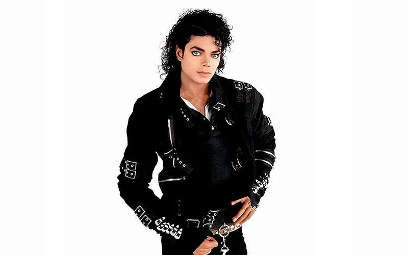
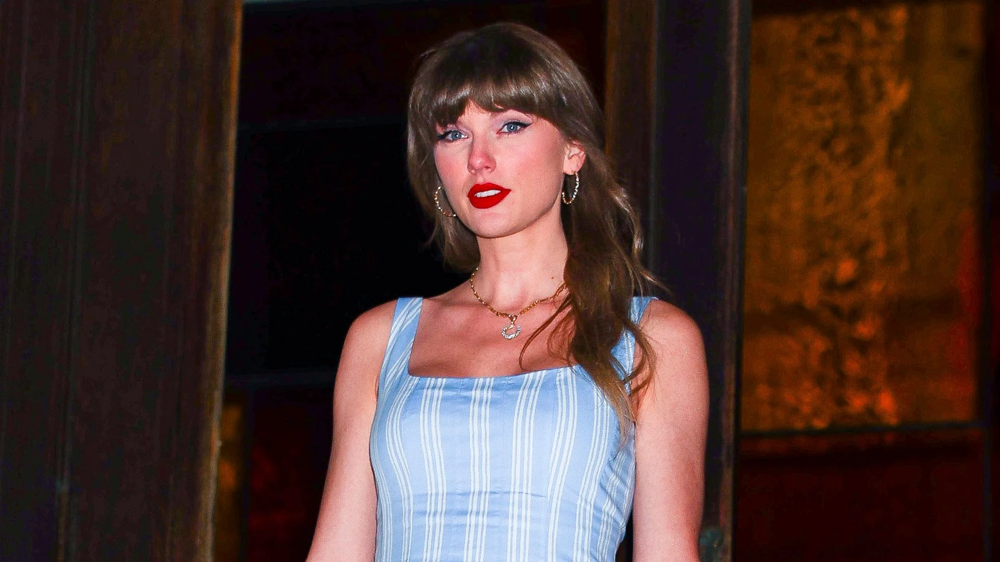

La música pop es un género caracterizado por sus melodías pegadizas, letras sencillas y gran aceptación comercial. Surgió como una evolución de distintos estilos musicales y actualmente es uno de los géneros más escuchados en todo el mundo.
El pop comenzó a desarrollarse durante las décadas de 1950 y 1960, influenciado por el rock and roll. Con el paso de los años, incorporó elementos de diferentes estilos como el dance, electrónica, R&B y hip-hop.
Artistas como Michael Jackson, Madonna y más recientemente Taylor Swift y Dua Lipa han contribuido a la evolución y popularidad del género.

Conocido como el Rey del Pop.

Una de las artistas más exitosas de la actualidad.
Figura destacada del pop moderno.
| # | Canción | Artista |
|---|---|---|
| 1 | Billie Jean | Michael Jackson |
| 2 | Like a Prayer | Madonna |
| 3 | SPoker face | Lady Gaga |
| 4 | Levitating | Dua Lipa |
| 5 | Blinding Lights | The Weeknd |
| 6 | Firework | Katy Perry |
| 7 | Rolling in the Deep | Adele |
| 8 | Shape of you | Ed Sheeran |
| 9 | baby | Justin Bieber |
| 10 | As It Was | Harry Styles |